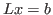

Next: About this document ...
Many tasks in large-scale network analysis and simulation require
efficient approximation of the solution to the linear system  is a graph Laplacian. However, due to the large size and
complexity of scale-free graphs, standard iterative methods do not
perform optimally. The use of support graph techniques for
preconditioning graph Laplacian systems has been studied, but efficiently
finding optimal preconditioners is challenging for general scale-free
graphs. An attractive option is to use support graphs in conjunction with
algebraic multigrid to precondition the graph Laplacian system. We employ
a tree-based support graph technique as a smoother for Lean Algebraic
Multigrid with aggressive coarsening. We present a preliminary numerical
study demonstrating that the support graph smoother coupled with
complementary aggressive coarsening should be an optimal solver.
is a graph Laplacian. However, due to the large size and
complexity of scale-free graphs, standard iterative methods do not
perform optimally. The use of support graph techniques for
preconditioning graph Laplacian systems has been studied, but efficiently
finding optimal preconditioners is challenging for general scale-free
graphs. An attractive option is to use support graphs in conjunction with
algebraic multigrid to precondition the graph Laplacian system. We employ
a tree-based support graph technique as a smoother for Lean Algebraic
Multigrid with aggressive coarsening. We present a preliminary numerical
study demonstrating that the support graph smoother coupled with
complementary aggressive coarsening should be an optimal solver.